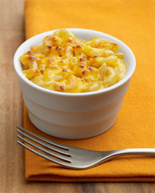

Macaroni and Cheese

Description
A quick and easy fix when you're in a hurry or
just feeling lazy. This recipe is cheap and tasty.
Ingredients
- 1 (8 ounce) box of elbow macaroni
- 1/4 cup of butter
- 1/4 cup of all-purpose flour
- 1/2 teaspoon of salt
- Pinch of ground black pepper
- 2 cups of milk
- 2 cups of shredded cheddar cheese
Steps
- Bring a large pot of lightly salted water to a boil. Cook
elbow macaroni in the boiling water, stirring occasionally
until cooked through but firm to the bite, 8 minutes. Drain.
- Melt butter in a saucepan over medium heat; stir in flour,
salt, and pepper until smooth, about 5 minutes. Slowly pour
milk into butter-flour mixture while continuously stirring
until mixture is smooth and bubbling, about 5 minutes. Add
cheddar cheese to milk mixture and stir until cheese is
melted, 2 to 4 minutes.
- Fold macaroni into cheese sauce until coated.